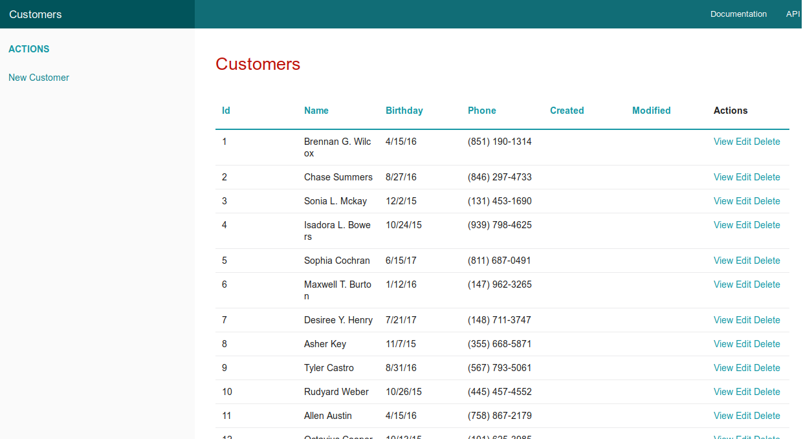
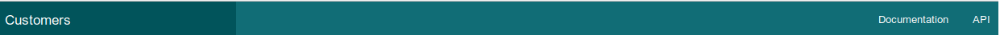
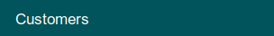
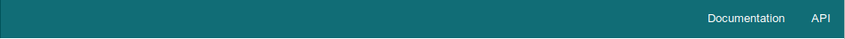
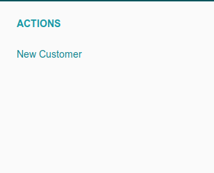
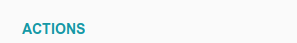
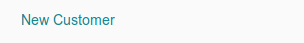
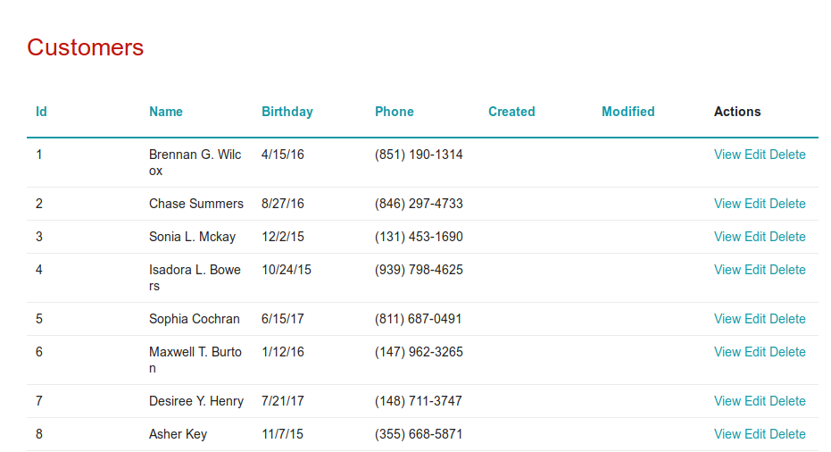

14.2 - Conhecendo o CSS default do CakePHP 3
A lógica pode levar de um ponto A a um ponto B. A imaginação pode levar a qualquer lugar. (Albert Einstein)
A tela principal do aplicativo Customers mostrando a view index.ctp

Agora mostrarei par cada região da tela, o respectivo código e mais abaixo as classes usadas no CSS default do CakePHP 3 para estas regiões.
No layout default.ctp
Quase todas as classes das 4 views defaults criadas pelo bake e do layout.ctp estão abaixo
layout.ctp (as imagens abaixo do código):
<nav class="top-bar expanded" data-topbar role="navigation">

<ul class="title-area large-3 medium-4 columns">
<li class="name">
<h1><a href="/portal/"><?= $this->fetch('title') ?></a></h1>
</li>
</ul>

<div class="top-bar-section">
<ul class="right">
<li><a target="_blank" href="https://book.cakephp.org/3.0/">Documentation</a></li>
<li><a target="_blank" href="https://api.cakephp.org/3.0/">API</a></li>
</ul>
</div>

Aqui embaixo o Cake joga o conteúdo da view/template atual:
<div class="container clearfix">
<?= $this->fetch('content') ?> <!-- Aqui ficará o código da view atual -->
</div>
index.ctp:
<nav class="large-3 medium-4 columns" id="actions-sidebar">

<ul class="side-nav">
<li class="heading"><?= __('Actions') ?></li>

<li><?= $this->Html->link(__('New Customer'), ['action' => 'add']) ?></li>
</ul>

</nav>
<div class="customers index large-9 medium-8 columns content">

As classes em negrito acima estão no style.css ou no base.css citadas abaixo:
.disabled a,
a.disabled {
pointer-events: none;
}
.top-bar-section {
margin-top: 2.8125rem;
z-index: 98
}
.right {
float: right !important
}
.top-bar {
background: #333;
height: 2.8125rem;
line-height: 2.8125rem;
margin-bottom: 0;
overflow: hidden;
position: relative
}
top-bar e title-area
.top-bar.expanded .title-area {
background: #01545b;
}
.top-bar.expanded, .top-bar,.top-bar-section ul li,.top-bar-section li:not(.has-form) a:not(.button) {
background: #116d76;
}
div.message {
text-align: center;
cursor: pointer;
display: block;
font-weight: normal;
padding: 0 1.5rem 0 1.5rem;
transition: height 300ms ease-out 0s;
background-color: #a0d3e8;
color: #626262;
top: 15px;
right: 15px;
z-index: 999;
overflow: hidden;
height: 50px;
line-height: 2.5em;
}
div.message.error {
background-color: #C3232D;
color: #FFF;
}
.content {
padding: 2rem;
}
.container {
overflow: hidden;
min-height: 92%; /* full height almost always */
}
.column,
.columns {
position: relative;
padding-left: 0.9375rem;
padding-right: 0.9375rem;
float: left
}
...
.large-3 {
width: 25%
}
...
.large-9 {
width: 75%
}
...
#actions-sidebar {
background: #fafafa;
}
.side-nav {
display: block;
font-family: "Helvetica Neue", Helvetica, Roboto, Arial, sans-serif;
list-style-position: outside;
list-style-type: none;
margin: 0;
padding: 0.875rem 0
}
.side-nav li {
font-size: 0.875rem;
font-weight: normal;
margin: 0 0 0.4375rem 0
}
.side-nav li.heading {
color: #008CBA;
font-size: 0.875rem;
font-weight: bold;
text-transform: uppercase
}A finalidade deste trabalho é oferecer informações que ajudem a trocar o template default do Cake para um framework como o BootStrap, o foundation, o Materialize ou outro e mesmo para um criado com o CSS puro.
Implementando BootStrap 3 em aplicativos do CakePHP 3
Uma forma bem simples de implementar o BootStrap 3 em aplicativos do CakePHP 3 é criar um aplicativo com o CakePHP 3 atual, instalar e habilitar o plugin admin-br atual e então gerar o código com o bake usando o plugin admin-br.
O código gerado tem o BootStrap 3 implementado.
Basta então ver o código gerado no src/Template para qualquer das tabelas e adaptar para seu aplicativo.
Informação recebida do Admad no fórum oficial do CakePHP:
O css default usado no CakePHP é um subconjunto do framework Foundation v5.